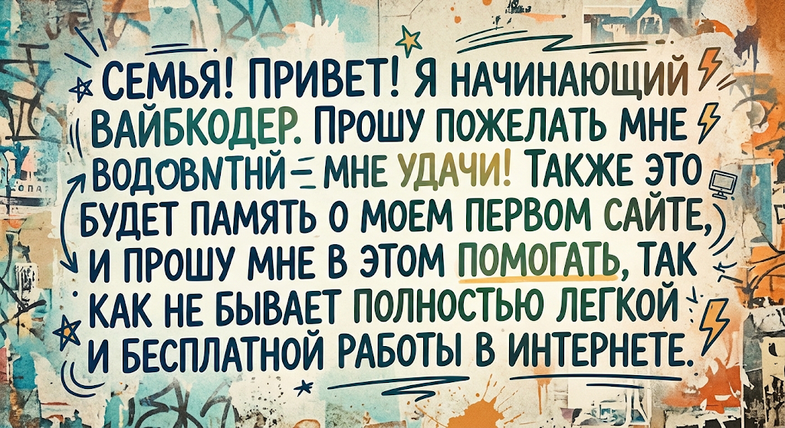

С ЭТОГО ВСЁ НАЧАЛОСЬ
Мой первый сайт
Небольшая страница на память о первом проекте и начале моего пути в создании сайтов.

МОЁ СООБЩЕНИЕ
Семья, привет!
Я начинающий вайбкодер. Пожелайте мне удачи! Этот сайт будет напоминать мне о моём первом проекте. Поддерживайте меня на этом пути: создание сайтов требует времени и усилий, а в интернете не всё бывает лёгким и бесплатным.